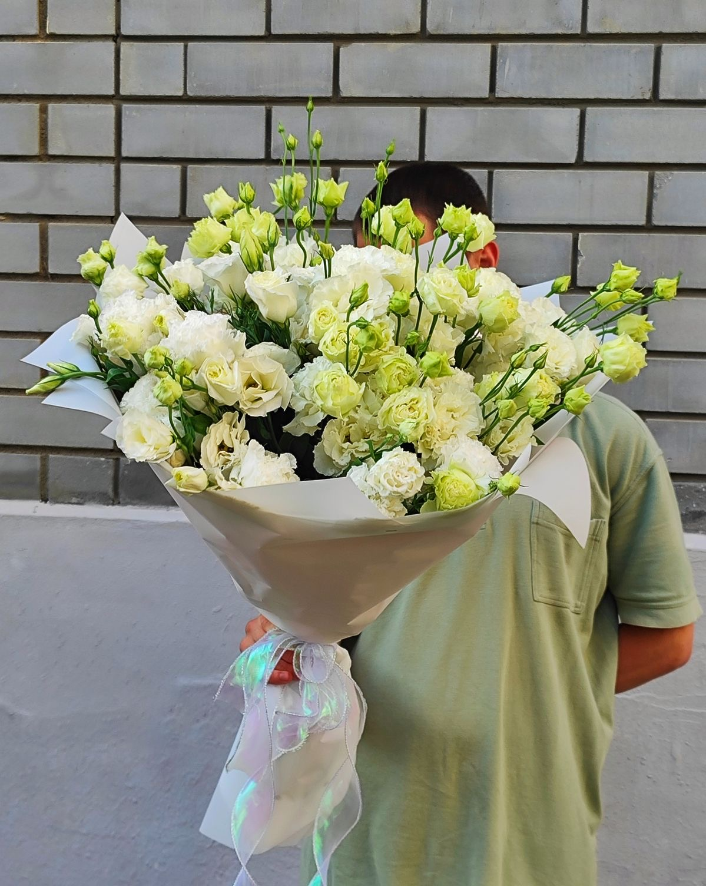

Эустома (или лизиантус) — изысканный цветок, напоминающий нераскрывшуюся розу. Символ нежности, элегантности и долгой счастливой жизни.
Эустома родом из Центральной Америки, из прерий Техаса и Мексики. В переводе с греческого «эустома» означает «красивый рот» или «прекрасноустая». В Японии этот цветок называют «ториджи» и считают символом красоты и долголетия. Эустомы бывают высокими (до 100 см, для срезки) и низкорослыми (до 30 см, для горшков). Цветы бывают простыми и махровыми, очень похожими на розы. Окраска: белая, розовая, сиреневая, фиолетовая, жёлтая, зелёная, часто с контрастной каймой. На одном стебле может распускаться до 10-15 бутонов. Эустомы очень популярны в свадебных букетах благодаря своей нежности и изяществу. В срезке стоят до 3 недель.